The Village Blacksmith (redacted)
Under a spreading chestnut tree
The village smithy stands;
The smith, a mighty man is he,
With large and sinewy hands;...
Week in, week out, from morn till night,
You can hear his bellows blow;
You can hear him swing his heavy sledge,
With measured beat and slow,...
Thus at the flaming forge of life
Our fortunes must be wrought;
Thus on its sounding anvil shaped
Each burning deed and thought!
-Henry Wadsworth Longfellow
Alas both the village smithy and the spreading chestnut tree are gone, done in by what passed for progress in its day but sounds depressingly familiar in this one. Industrial mechanization replaced a thousand smithies "large and sinewy hands" with a single water-powered trip hammer, while a blight, unwittingly imported with expanded global trade, decimated the proud chestnut to a few stump sprouts. Along with these disappeared the tinsmiths, whitesmiths, cutlers, coopers and a dozen more metal trades of our handcrafted, preindustrial past. And, in this writer's view, along with the handworking trades went much of the attitude of sturdy, independent self-reliance that made America great.
Yet, the very idea of working metal leaves most of us as cold as the steel itself. Few of us are brought up anymore realizing that we have the latitude to form metal; metal has become the exclusive medium of the mass manufacturer. Odd, this, since any country person who maintains a house and barn learns basic woodworking,. like it or not. Granted, warm once-living wood is intuitively more inviting than cold, unyielding metal. But the fact is you work metal the same as you work wood, only metals are harder. The processes of measuring, cutting, fitting, fastening and finishing are essentially the same, whether you're building a wooden potato-storage crate or a sheet-metal maple-sap evaporating tray. You need different tools and techniques is all.
It's a major step in genuine country self-sufficiency to become as much of a metalsmith as time, talent, cash and inclination allow.
Metal is classified as either ferrous (or ferrum in Latin), which means it contains iron, nonferrous or precious. Nonferrous metals include copper and its alloys - brass and bronze - plus aluminum and its alloys. All are softer than iron and its alloys - gray iron, wrought iron and malleable iron - and the many types of steel. (We won't get into the precious metals here.)
Around the farm we use copper, lead and aluminum in sheets for roof flashing around chimneys and in roof valleys to keep water out of the house; in a few shop uses, such as forming copper plate into jaws for the vise to hold scratchable chrome-plate and polished metal; and in specialty nail, and bolts.
Copper is soft and easily cut. Copper roofing nails are used to hold slates on the roof, largely because they can be cut with a long- flat hook knife when broken slates need to he removed and replaced. Copper clench nails are driven through wood planking of boats, then bent over to hold. when it comes time to
replace a damaged or rotted plank, it's easy to unclench or cut the soft copper.
Copper and brass are soft enough to be hammered cold into ornaments, fittings and fixtures. Copper sheets, plumbing pipe, fittings and nails are sold i hardware stores.
Bronze is harder and needs heat to become malleable. You can get worn machined auto parts of brass and bronze in the scrap pile behind a transmission shop. Bronze is the king of art metals, because it metal casts beautifully and lasts forever That, however, is another story.
The metals we use most are ferrous-alloys of iron and carbon plus other metals, including steel. Most steel we encounter in nails, tailpipes, bars, rods and plates is relatively soft, low-carbon or mild metal that is tough enough, but easy to work. Soft-steel clench nails are used to hold on horseshoes; they can be cut with one tap on a clench tool to remove the shoe. Shoes themselves are of a higher-grade steel, made tough to withstand wear,. but soft enough to be malleable and easily worked by a faster to fit the hoof.
Keep in mind that low carbon steel can not be hardened (with heat and controlled cooling) to make a culling or hammering tool. For that you need medium-carbon steel, as found in hammer heads, or high-carbon steel as found in edged tools. Tool steel is a special high-carbon alloy- that can hold a thin, good cutting edge under heavy use. High-speed tool steel will hold an edge and keep cutting even when friction makes it so hot it glows red.
Stainless steel is hard, so will hold an edge longer than carbon steel, but it is more difficult to sharpen. It contains chromium, which hardens the alloy and corrodes to that familiar reflective sheen the instant it is exposed to air, forming a protective coating over rust-prone iron.
Many kinds of steel in various stock shapes (rods, bars, angles, sheets, hardened nails and bolts) can be found in hardware stores and steelyards The way they were formed, whether cold rolled or hot rolled, influences how they will wear and other characteristics. Different steel is identified by complicated color coding. However, when we're on the farm we use whatever is at hand-mild steel Cot the most part. Any time we're needed a steel for a particular use (a good-tampering) but-not-too-brittle steel for fancy knifemaking. for example), we've been able to get it from catalogs. Or else the steelyard guys or hardware store clerks have had all the resource material and advice needed. (Usually, I use the tool steel in cheap nail removers, pry bars or flat demolition bars that you find for a dollar apiece in bins at mall stores. Much of this steel comes from the Far East and is of uneven quality. But the chickens don't care what quality of steel is in the hasp that keeps the henhouse door closed.)
If we're not sure if a metal is ferrous, a magnet will solve the puzzle. If the grainy texture of a break in iron doesn't distinguish it enough from steel, I hit it with a hammer. Steel rings: iron clunks.
Granted, wood is intuitively more inviting than cold metal. But you work metal the same as you work wood, whether you're building a wooden storage crate or a sheet-metal evaporating tray.
In our first smithing adventures we bought a small and finely machined vise, a fine-toothed flat metal file, a little 1/4" steel-cutting chisel and a matching pointed pick-punch. The next shop extras were a high-speed electric bench grinder with both a coarse- and fine-grinding wheel, plus the capacity to accept buffing wheels and grinding discs. If you intend to do any serious metalwork, you will also need a heavy workbench to hold your grinder and vice. Don't invest in anything fancy, as it will be burned by hot metal repeatedly. We have built several and found that native oak, bought aged but rough-cut from a local sawmill is best, Make the top of your bench from planks at least two inches thick, and two times that is better (if you have plenty of help to lift and carry the wood).
You can save trips to the hardware store by getting a few items at once: a set of chisels, a set of metal-cutting files, a set of punches (pointed, indent-end nailset type and flat-tips) and the largest vise and grinder you can afford. You can save half by ordering a China-made vise from a discount tools catalog, but be sure the vise has an ample flat anvil surface in back and that the anvil is located on top of the bolts that hold the vise to the bench rather than extending back (where it will wobble). Common vises have tempered lawns but the attached anvils are made of an untreated steel that is sufficient for occasional gentle flat forging although its easily dented. Look into a Wilton or other premium U.S. brand to get a tempered vise surface that won't dent of scar when hit by tempered tools suds as a hammer brad, pick or punch. For serious hammer-and-anvil forging, get a real anvil - one made of properly treated steel, not cast iron. As noted below, you can make or buy one.
Apply a piece of metal to the grinding wheel and look for the sparks. If there are...
None: a nonferrous metal, clean metal will spark silvery-white if aluminum, yellow if brass, red-gold if copper, silvery-gray if lead. Very few sparks at the end of four-to six-inch-long streamers in a light straw-yellow color: wrought iron.
Just a few light straw-yellow colored sparks; some close to wheel with thick streamers; metal often softens and malforms wheel face: mild steel.
Many white sparks with long streamers:
tool steel (in tools and hardened fasteners).
A shower of white sparks close to wheel: high-carbon steel (in edged tools). Sparks and streamers showing a chrome-yellow color three inches or so from the wheel: high-speed steel (high-speed drill bits). A shower of white sparks that seem to pop to life a few inches from the wheel: manganese steel (used in machine parts feeding to resist wear).
You can be more sure of getting a good GE motor on your grinder by purchasing a domestic make. Domestic or import, a full 1 hp/10" wheel grinder will do several times the work of a 6" fractional-hp model. And while we're on workbench essentials, you'll also want a 2 1/2 - pound blacksmith's hammer with a long (13" or 14") handle, a square, flat face and a wedge-shaped cross-peen on the back. Plus a set of ball-peen hammers in three to five different sizes, with a flat hammer face in front and a ball in back (rather than the nail-removing claw of a carpenter's hammer). Incidentally, the ball of the hammer or similar shapes on tinsmiths' iron stakes set into special holders or in the hardy hole of an anvil are used to thin metals and make the bottoms of pitchers and bowls from pewter, silver, copper and other soft metals.
In this age of pervasive (and, many would say, intrusive) government regulation and growing numbers of product-liability lawsuits, every device that could remotely cause harm comes loaded with safety manuals and hazard stickers. Warnings are even stamped or molded into the tool steel itself. The alarms are so numerous that they are ignored or removed by many All-American do-it-yourselfers as a misguided assertion of independence:
Those of us who live off-grid can gleefully strip the garish overhead-power-line hazard stickers from metal ladders and paint over the underground-cable-hazard labels on power shovels
But one place the warnings deserve your full attention and mine is in metalworking. Yo see stampings or stickers on every consumer-grade chisel, punch or hammer reading to the effect:
"Beware of metal chipping off; USE EYE PROTECTION. "
Any metal-on-metal contact can produce chips, slivers or sparks. Please protect those eyes, folks.
A speck of wood sawdust in an eye is a nuisance that can usually be rinsed out.
But a sliver of hot metal will not wash out and can blind you or an onlooker.
Strong. plastic-lens eyeglasses are better than no protection at all. But full-face shields or shop glasses are recommended, whether you wear specs or not. Onlookers should have full-face shields as well, especially small kids who like to get their noses as close to the work as they can.
With a mastery of sheet metal fabrication, you can make an endless number of things for the farmstead buckets and troughs to hold stock water and feed; gutters and drain-pipes; long bilge type,"tin pumps", conduits to run water where you need it; boxes; varmint-proof liners for storage containers, and more. Sophisticated sheet metal joints can be formed at home using simple tools, but are beyond the scope of this article Most homestead sheet-metal work is restricted to flashing chimneys, nailing aluminum flashing over mouse holes, forming simple boxes and liners, and repairing auto and truck tin.
The main sheet-metal tool is a set of tin snips. A set of three aircraft snips - one that cuts straight and others that cut right and left - costs less than $20 and makes snipping copper or aluminum a snap.
To cut steel of any thickness, you need power tools. I have a pneumatic shear and a nibbler that nips off little bites of steel as it goes. Each costs about $40 and one or the other goes through auto-body metal like soap. Air tools are covered below.
The bread and butter of the business of fastening is the rivet. A bewildering array are available in bulk to the trade, but not by the pound or piece in most hardware stores. You can buy round-headed soft-steel rivets, flat-headed copper rivets and burrs (washers) up to 11/2" long; and copper slating nails (those you can purchase in bulk, for about $3 to $5 per pound). Plus, you can get a variety of brass- and steel-threaded knifemaker's rivets at $1 to $3 a pair from blacksmiths' and farriers' supply houses (see Sources ).
Sheet-metal fastening has been made infinitely easier by the general availability of hand rivets and rivet guns You no longer have to get in back of a rust hole in a truck fender or a gutter to fasten a bolt or rivet to secure a patch. Working entirely from the outside, you drill or punch holes through both metal sheets to be fastened. Then the pop rivet is pushed through and the rivet gun is squeezed; it pulls on a wire mandrel that crushes the rivet, cinching it into a flat head tight against the inside of the patch. The mandrel pops off and you have a functioning rivet. A marvel!
Get a heavy-duty hand or air punch to make rivet holes. Drilling floppy sheet metal can be a task; a block of wood in back of the metal will allow you to make a dent to start the drill and give you something solid to push the drill hit against. But even this takes three or four hands, while a punch takes just one hand.
Blind or "pop` rivets are made of aluminum or common or stainless steel and come in 1/8" 1/4" and 3/8" grip (thickness of material riveted together) and in diameters of 1 1/16", 3/32", 1/8", 5/32" and 1/4" . In most stores (if they stock rivets at all), 1/8" diameter is all that is commonly available. The best selection of rivets and riveters is found in the JC Whitney auto parts catalog. Whitney also carries two kinds of threaded rivets: with these, you pop the rivet body into the back sheet; then, using the little screw bolt that threads into it, you can screw on a removable. Patch, hinges for access/inspection ports and much more. To make a thin steel or aluminum flashing box for any purpose other than heating water, draw a full-size paper pattern with sides and ends attached to the rectangular bottom. Make inch-wide tabs on each side of the ends. Lay the pattern over the steel and cut out with tin snips. Clamp sides and ends between two lengths of strap iron to make sharp bends. Bend sides and ends up and fasten bent-in tabs to sides through punched holes with pop rivets. Use a modern clear caulk/sealer to waterproof joints. Before bending. you can use clamped iron or wide-jawed flanging pliers to bend sharp edges into a narrow flange or lip to increase edge strength and prevent tin cuts.
Welding, brazing and soldering make more permanent, heat-proof sheet metal joints but are better left to your intermediate stage.
The first lesson I learned in smithing was that grinding down metal does less damage to the workpiece than chiseling. This rule served me well in later years when I took to disassembling cast-iron wood-burning stoves for moving, summer storage or repair. Stove bolts and nuts are intentionally made of soft steel and can usually be twisted apart with a screwdriver and pliers. But taking a chisel to an especially stuck tap bolt could split old cast iron. That won't happen with a grinder unless you apply it so enthusiastically that it overheats a spot in the iron where an old plate might expand and shatter.
I n subsequent years,. I took on two electric disc grinders: the first, a 4"-disc, 90°-angle grinder, and the second, a small hobby-size Dremel set, with a handheld grinder and an assortment of rills,. abrasive cutters and mini-mini-sanding and grinding discs. The Dremel performs small work exquisitely. It was perfect, for instance, for grinding a new slot in a stove bolts screwhead, which had been so bruised during inept assembly that a screwdriver couldn't get a purchase on it.
Variable-speed, 3/8" chuck handheld electric drills will work metal, but are limited in torque and speed and best reserved for making Small holes (1/2" or less) in soft metals, or used with 3" abrasive discs and grinding wheels - used, say, to remove surface rust from an automobile body panel without threatening to go through the underlying steel. I do haze an electric grinder, but use it fitted with a round of chain-saw cutters for rapid wood removal. My most effective metal-remover is a little pneumatic die grinder that makes over 20,000 revolutions per second at 90 pounds of air pressure, using only five cubic feet of air per second.
An adequate homestead compressor delivering the minimum needed for serious work-nine cubic feet of air at 40 to 90 PSI (pounds of pressure per square inch) -can be had for under $40 for an electric, or $100 more for a gas-engine-powered version. You can get air-powered metalworking counterparts (or every woodworking hand tool there is, not to mention an arsenal of impact lug wrenches, power ratchets, metal saws and grinders. Plus, given the right compressor, you can fill your tires, remove wheel lug nuts, grease (and then polish) the truck, chip off old paint, caulk windows, paint the house with a power sprayer and much more. I recommend air-power as one of the first tool investments for any new country person.
We all need a good demolition saw to remove old barn stalls, cut out new door and window openings and such. Nothing works as well as a variable-speed reciprocating saw that pushes a blade in and out of its log-shaped housing. Fitted with a coarse wood-cutting blade, these easily make up to foot-deep cuts in old house or barn walls-severing nails and all (along with electrical lines... watch it!) They are unmatched for cutting metal, even thick steel plate. Electric versions work fine, but cost the better part of $200 and weigh a ton, making it difficult to work overhead for long. My little air-reciprocating model weighs a mere four pounds, goes from the crawl needed to cut thick metal (while cooling it with fluid) to the 9,000 strokes per minute that will rip through 150-year old rock-hard chestnut. A name brand model (Ingersoll Rand ) costs $85.
To drill hard metal. you need to apply pressure more than speed to a high speed, metal-cutting drill bit. Best in my experience is a multi-speed drill press the bigger and more powerful the better. A powerful drill press will handle a milling head and permit you to machine steel so as to make such delights as a steam engine. Foron-site work such as drilling plow-mounting holes through the frame under your truck, get large slow, but high-torque, powerful shovel-handled (electric) 1/2" drill. You will need a set of 1/2"-shank high-speed drill bits and a bit sharpener to keep the cutting edge sharp. A sharpener that is powered by your 3/8" hand drill costs loss than $40. (It's either a bit sharpener or having to buy replacements when they're dull. Good 1/2" bits ain't cheap.)
The traditional way to hand cut metal is with a hacksaw: a rectangular, sliding-steel frame with a pistol-grip on one end, holding a 10" or 12" fine-toothed steel blade. I have one made of tubing rather than flat steel; it is a little more expensive, but more rigid and holds the blade wide greater tension for less flex in the cut. The longest-lasting blades are made of a thin strip of brittle hardened steel or Carborundum containing long-lasting teeth welded to a backing of softer more flexible steel to prevent breakage. A good bimetal hacksaw blade will last for years doing occasional jobs and in serious metalworking but will outlast common blades many times.
Blades come in 24, 36 and higher tpi (teeth per inch). The finer the teeth, the less metal is removed in a pass, the finer the cut and the harder the metal that can be parted with it. Get an assortment of sizes and use what works best for the job
For easiest cutting, place the work in a heavy vise, with the area to be sawn as close to the edge of the vise jaws as possible. Hold the free portion of the work with your free hand. This will reduce vibration, and make the work go faster and the cut straighter.
Use a file to make a deep scratch in hard metal to give the blade a first-cut tooth-hold so it doesn't dance all over the work, scratching it as you try to get a purchase with the blade.
Cut in easy strokes using the full length of the blade.
As noted above, my candidate for the single most useful parting tool is a reciprocating saw, with a full-hand hold at one end and a saw blade at the other. The stroke of the blade is only an inch or so but blades run to a foot in length and they can get into places where no other tool will fit. The variable speed feature is critical. In cutting either very thin or very trick hard metal, you want a slow speed: thin so that the stock does not tear, and thick so that the blade doesn't heat up and burn.
To cut bar stock, plumbing pipe and the like, metal shops use an endless-blade band saw with a Circulating pump system that keeps a cooling fluid flowing over the cut, much like a dentists water-cooled high speed drill. At $1,000-plus apiece, these saw systems are a little steep for most home/farm shops. The reciprocating model will do the job if you have a good vise, the time and a squirt can of coolant (use a pan to catch the reusable liquid). So will your hand-powered hacksaw, but an inch of mild steel would take all morning.
A fast if inelegant way to cut metal is by using one of the aforementioned grinding wheels or discs along with pneumatic tools. My air-powered high speed cutter cost under $25, makes up to 20,000 rpm and uses a 3" abrasive mineral-coated (Carborundum) disc that will go through steel rod, pipe and plate like butter. It's a must for rough-cutting old metal plumbing pipe, muffler clamps and bumper bolts. Heat buildup is avoided, as cuts are typically quick and much potential heat energy is absorbed by the ablating disc, which self-destructs as it goes. Despite their designed dispensability, discs last for a surprising length of time and replacements cost less than a dollar.
We all need a good demolition saw. My little air reciprocating model weigh four pounds and goes from the crawl needed to cut thick metal to 9,000 strokes per minute. At that rate it will rip effortlessly through 150-year-old, rock-hard chestnut beams.
The most romantic aspect of metalworking is the forge, leather apron and clang of hammer on anvil. Blacksmithing as a craft and art did not disappear with Longfellow's village smith and his chestnut tree. The old-time skills are kept alive'' by a small army of teachers, re-enactors, skilled art smiths and the 7,000 professional farriers that shoe over 2 million riding hones in America today. There are courses you can take and books and videos you can buy if the romance appeals. We typically find smithing hard, hot and dirty work - smelly, too, if super-hot-burning anthracite coal is used rather than charcoal - and do as little as we can get away with. Still, we did inherit the use of a small coal forge and huge anvil for a time a while back, and learned that some things can be made right only one way - by forging them yourself.
We needed a set of steel grills to put across doors and windows of the cabin to keep out a variety of unwanted critters. Such a grill is best made of tempered steel, fabricated before hardening. The grill is riveted or welded at crosspoints, then installed using long, flat-headed, square-shanked 1/2" steel bolts. (The bolts extend through square holes punched into fiats hammered into the steel, thence through holes bored through the logs to be threaded and scored with holts on the inside.) A metalworking shop could do the work, but it would cost more than the stuff we want to protect.
To forge our own, we are in the process of assembling a budget-priced smithy; following is the plan in case you'd like to do the same. This is how smithies are built on sheep stations in the Australian Outback, where store goods are in short supply, but ingenuity isn't.
All forges contain a firebrick or cast-iron firepot to hold the 2700°F fire needed to forge-weld steel. The Aussie forge uses an old truck-size cast-iron brake drum. They are large and thick enough and have an axle hole in the middle. On ours, an iron perforated-disc runoff drain cover will be placed over the opening and let rust in place. Using 2" or 3" iron plumbing pipe and flanges. a tube will be run to a surplus squirrel-cage fan. A rheostat regulates the blower speed. The Aussie firepot is placed in a home-welded angle-iron forge table with a hood and chimney rigged over it. We plan to set ours in a bed of sand in the firebox of a fancy cast-ton wheeled backyard gas barbecue that somebody left at the dump when the burner broke. We'll get a pair of sheet-metal flanging pliers and form a hood and flue to fit from sheet metal and blinds.
If you follow country auctions you can often get a farm smithy complete with portable forge, anvil and tools for around $1,000. Centaur Forge sells English, German and North American anvils in all shapes, sizes and prices, ranging from an almost $3,000, 500-pound Vaughan-Brooks (British) smith's anvil to a $150, 35-pound version of the portables that farriers carry in their trucks and use in the stall.
The Outback Aussies make theirs from a 2' or 3' section of salvaged railroad track. In most of rural America you can still find steelyards that have plenty of old main line or trolley track lying around, Pick out a couple of feet of the most modern, carbon steel rail (rail that throws sparks under a high-speed grinder and that has the best ring to it).
The Aussies spike the rail to a heavy sawhorse and have at it. You can do the same, or, if you like, you can make a professional anvil out of salvaged steel rail. Have the yard cut the rail into a rough anvil shape; pick from the shapes shown in the Centaur Forge catalog or at their Web site: www.anvilfire.com/centaur/catalog/anvils/a nvils_O.htm . Back home, grind it smooth, drill pritchel and hardy holes and temper and anneal the body (harden to red-hot and brittle, then soften to straw yellow and a proper hammering elasticity) in two heats on a bed of coals and two quenchings in a washtub of water Fully illustrated directions will be found in Alex Weygers' essential three-part book: The Complete Modern Blacksmith (see Sources ).
The old-time skills are kept alive by a small army of teachers, re-enactors, skilled art smiths and the 7,000 professional farriers that shoe over 2 million riding horses in America today.
Till you gain the skill to make your own, you'll need to buy a set of wolfs jaw tongs (with serrated teeth that will grab anything) for $20 or so.
Set your anvil with its top at hip level on a section of whole, round log under a spreading apple tree, fire up the brake drum forge, and you are on your way to becoming a master of metalworking.
If you follow country auctions you can often get a farm smithy complete with portable forge, anvil and tools for around $1,000.
Pure iron is very soft so other elements are added to improve its strength, hardness and elasticity. Passing an electric current through a solution of ferrous chloride produces pure iron.
Pig iron is manufactured from iron ore, coke and limestone in a blast furnace. The molten iron is poured into a mold called a "pig". The pig is sent to a foundry to be further refined.
Cast iron is partly refined iron and contains up to 5% carbon. This makes it very hard but brittle. Cast iron is used in car and truck cylinder blocks.
Wrought iron is nearly pure iron mixed with silica. It is more malleable than cast iron and resists rusting. Wrought iron is used for outdoor furniture, gates, railings and other decorative items.
Steel is the most commonly used type of iron, and comes in various forms:
Carbon steel accounts for most of the steel we use. It contains varying amounts of carbon and traces of manganese, silicon and copper. Car bodies, building supports, ship hulls and bobby pins are typically made of carbon steel.
Alloy steel is the most expensive steel. It contains vanadium, molybdenum and titanium. Harder than carbon steel, it makes fine gears, axles and knives.
Stainless steel is rust-resistant. It contains chromium and nickel. Most stainless steels are very strong at extreme temperatures. You'll find it in surgical instruments and kitchen cutlery.
Tool steel is extremely, hard steel. It contains tungsten, molybdenum and other strong elements and is mainly used in cutting and shaping machinery.
When their work life is over, hacksaw blades can be heated minimally with a propane torch, bent into triangles and fastened to short or long wooden handles to become the slickest shallow-cutting garden weeders ever. When heating the steel of the retired blade to make the front bends, you can crimp the bend to angle the cutting edge backward so it will lie almost parallel to the ground as you hold it naturally - standing, with the blade on a long handle, or kneeling, with the blade on a short handle. This gives you a shallow-digging "co-linear' weeding hoe blade that runs lust under the soil surface to nip weeds off at the stem. A couple of manufactured versions are being much-touted in garden supply catalogs these days. At least one is made in Switzerland of chrome plate or stainless steel and is being sold for something more than the cost of a used hacksaw blade and an old broom handle.
Materials:
12" bimetal hacksaw blade; Replacement hoe handle or an old broom handle; (2) 2" x 1/8" machine screws with nuts; Epoxy cement
Tools:
Vise; Pliers; Propane torch; Wood plane or rasp; Wood saw; Drill and 5/16" drill bit; Rotary grinder
Hasluck's Metalworking: Tools, Materials & Processes by Paul N. Hasluck (reprinted by Lindsay Publications Inc.) All metals and techniques by an old-time master. 1907 edition with 760 pages and 2,206 illustrations. A must have for metalworkers.
The Complete Modern Blacksmith by Alexander G. Weygers (list price: $19.95; paperback; 288 pages; Ten Speed Press, 1997; ISBN: 0898158966) Three books in one, all with detailed illustrations. By a master smith and trained fine artist, sculptor and woodcarver. You can learn blacksmithing with this book.
Centaur Forge Ltd. , 117 North Spring St., P.O. Box 340, Burlington WI 53105-0340; (414) 763-9175; orders only: (800)666-9175); www.anvilfire.com/centaur Everything for the blacksmith and farrier,
Lehman's Non-Electric Catalog , P.O. Box 41, Kidron, OH 44636; (330)857-5757; e-mail: GetLehmans@aol.com; www.hearth.com/lehmans/lehmans.html Cumberland General Store , #1 Highway 68, Crossville, TN 38555; (800) 334-4640; www.cumberlandgeneral.com
Harbor Freight Tools , 3491 Mission Oaks Blvd., Camarillo, CA 93011-6010; (800)423-2567; fax: (800) 9055520; www.harborfreight.com
Northern Tool & Equipment , P.O.. Box 1499,
Burnsville, MN 55337-0499;(800)533-3343; fax:
(612) 894-0083; www.northerntool.com
Sears Power and Hand Tools , 3737 Grader
St., Suite 10, Garland, TX 75041; (800) 377-7414;
www.sears.com/craftsman
JC Whitney Auto Parts , 1 JC Whitney Way,
PO. Box 3000, La Salle, IL61301-0300; (312)431
6102; www.jcwhitney.com
Lindsay's Metal Working Books , P.O. Box 538, Bradley IL 60915-0538; (815) 935-5353; www.lindsaybks.com
Charmingly quirky catalog lists books on blacksmithing and all other aspects of old-time metalworking.
Anvil Magazine : The Voice of the Farrier and Blacksmith, www.anvilmag.com
History of Iron, Interactive
www.primarysources.msu.edu/curricula/ curric/iron/past/index.html
Site includes history of smithing and movies of a blacksmith forging various metals .
|
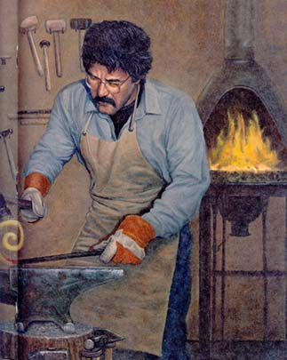 Henry Wadsworth Longfellow |
1. DRILL ATTACHMENT HOLES IN BLADE Enlarge existing holes at blade ends to 3/16"" and drill or punch two more 3/16""' holes 1/2"" in from first holes |
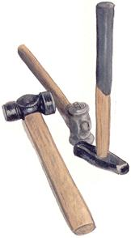 2. MARK BLADE FOR BENDING Mark blade at 1"" and 4"" from each end. |
|
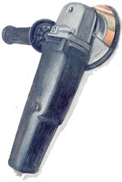 3.HEAT AND BEND BLADE Place blade in vise. With propane torch, heat blade at marks and with pliers bend into topped-""Y"" hoe shape as indicated. (See figure 5 for final shape.) |
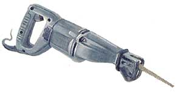 4. PREPARE HANDLE Plane or rasp tool end of handle to a narrower 1/2"" diameter. With wood saw, make a 1"" slit in end of handle. With drill and 3/16"" bit, drill through handle to match holes in end of blade. |
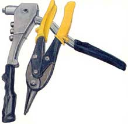 5. FASTEN BLADE TO HANDLE Fill slit in handle with epoxy cement. Insert ends of blade. Insert machine screws through holes in handle and blade. Tighten. |
|
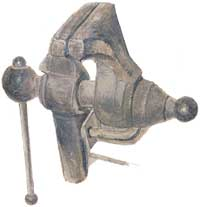 6. FRICTION-WELD FASTENERS Weld nut to screw by grinding down end of screw on a rotary grinder. Grind screwhead and nut round and smooth. |
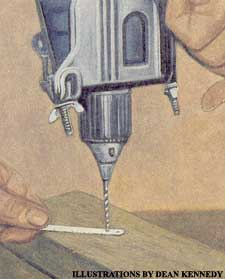 |
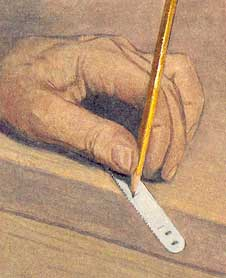 |
|
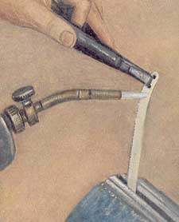 |
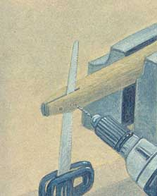 |
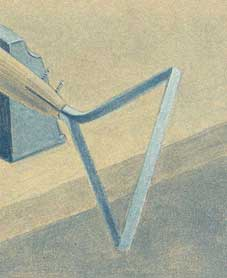 |
|
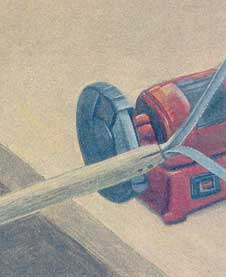 |
|
|